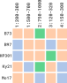
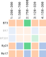
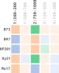
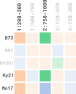

The basic workflow of the rPHG2 package is as
follows:
- Create a connection object
- Read data into the R environment
- Analyze and visualize data retrieval
This document introduces you to rPHG2’s methods and
grammar, and shows you how to apply them to the previously mentioned
workflow.
Creating connection objects
rPHG objects can be created through two primary sources: * local data * server connections
Creating initial “connection” objects helps unify downstream reading and evaluation steps for PHGv2 data. In the next couple of sections, we will show you how to create either local or server connnection objects.
Local data
Local connections are for local TileDB instances or direct
locations of hVCF
files on a local disk. To create a local connection, we will create a
PHGLocalCon object using the following constructor
function:
For the above example, we will create a connection to some example
local hVCF files provided with the rPHG2 package:
LineA.h.vcfLineB.h.vcf
Since the full paths to these files will differ between each user, we
can use the system.file() function to get the full
path:
system.file("extdata", "LineA.h.vcf", package = "rPHG2")This will get the full path from the extdata directory
for the file, LineA.h.vcf, found in the rPHG2
source code.
We can further build on this to create a collection of full file paths to our hVCF data:
hVcfFiles <- system.file(
"extdata",
c("LineA.h.vcf", "LineB.h.vcf"),
package = "rPHG2"
)Now that we have a collection of hVCF files, we can use the
PHGLocalCon() constructor function to create a
PHGLocalCon object:
localCon <- hVcfFiles |> PHGLocalCon()
localCon## A PHGLocalCon connection object
## ❯ DB URI.... : ◯
## ❯ hVCF Files...: ◉From here, we can move to the next
section to create a HaplotypeGraph object interface
with the JVM.
Server connections
Conversely, server locations are for databases served on
publicly available web services leveraging the Breeding API (BrAPI) endpoints. Since this
is a connection to a server, a URL path instead of a local file path
will be needed. We will use the PHGServerCon() constructor
function to create a PHGServerCon object:
srvCon <- "phg.maizegdb.org" |> PHGServerCon()
srvCon## A PHGServerCon connection object
## ❯ Host............: phg.maizegdb.org
## ❯ Server Status...: 200 (OK)In the above example, we have made the assumptions that this URL:
- Uses a secure transfer protocol (
https) - Uses default ports for data serving
- Has BrAPI specified endpoints
For points 1 and 2, if the URL uses
non-secure protocols (“http”) and/or has a modified port number, you
will need to specify these with the protocol and
port parameters in the constructor function. For
example:
"www.my-unsecure-phg.org" |>
PHGServerCon(
port = 5300,
protocol = "http"
)For point 3, if the constructor cannot resolve mandatory endpoints, an exception will occur.
Creating JVM objects
Now that we have either a local or server-based connection object, we
can convert the raw hVCF data into a HaplotypeGraph
JVM object and bridge the Java reference pointer to R using the
function, buildHaplotypeGraph():
graph <- localCon |> buildHaplotypeGraph()
graph## A HaplotypeGraph object @ 17f9d882
## ❯ # of ref ranges....: 38
## ❯ # of taxa..........: 2
## ❯ # of chromosomes...: 2In the above example, we took the local connection object and passed
it into a HaplotypeGraph constructor. Here, we have a basic
class that contains a pointer object where we can direct data from Java
to R:
graph |> javaRefObj()## [1] "Java-Object{net.maizegenetics.phgv2.api.HaplotypeGraph@17f9d882}"Reading data
Now that we have created a HaplotypeGraph object, we can
begin reading data using the read* family
of rPHG2 functions.
Sample IDs
To return a vector of sample IDs from the graph object, we can use
the readSamples() function:
graph |> readSamples()## [1] "LineA" "LineB"Reference ranges
To return information about all reference ranges found within the
graph object, we can use the readRefRanges() function. This
will return a GRanges object which is a common data class
in the GenomicRanges
package:
graph |> readRefRanges()## GRanges object with 38 ranges and 1 metadata column:
## seqnames ranges strand | rr_id
## <Rle> <IRanges> <Rle> | <character>
## [1] 1 1-1000 * | 1:1-1000
## [2] 1 1001-5500 * | 1:1001-5500
## [3] 1 5501-6500 * | 1:5501-6500
## [4] 1 6501-11000 * | 1:6501-11000
## [5] 1 11001-12000 * | 1:11001-12000
## ... ... ... ... . ...
## [34] 2 38501-39500 * | 2:38501-39500
## [35] 2 39501-44000 * | 2:39501-44000
## [36] 2 44001-45000 * | 2:44001-45000
## [37] 2 45001-49500 * | 2:45001-49500
## [38] 2 49501-50500 * | 2:49501-50500
## -------
## seqinfo: 2 sequences from an unspecified genome; no seqlengthsHaplotype IDs
To return all haplotype IDs as a “sample \(\times\) reference range”
matrix object, we can use the readHapIds()
function:
m <- graph |> readHapIds()
# Show only first 3 columns
m[, 1:3]## 1:1-1000 1:1001-5500
## LineA_G1 "12f0cec9102e84a161866e37072443b7" "3149b3144f93134eb29661bade697fc6"
## LineB_G1 "4fc7b8af32ddd74e07cb49d147ef1938" "8967fabf10e55d881caa6fe192e7d4ca"
## 1:5501-6500
## LineA_G1 "1b568197f6f329ec5b71f66e49a732fb"
## LineB_G1 "05efe15d97db33185b64821791b01b0f"Haplotype ID metadata
To return metadata for each haplotype ID as a tibble
object, we can use the readHapIdMetaData() function:
graph |> readHapIdMetaData()## # A tibble: 76 × 6
## hap_id sample_name description source checksum ref_range_hash
## <chr> <chr> <chr> <chr> <chr> <chr>
## 1 0eb9029f3896313aebc69… LineA haplotype … /User… Md5 39f96726321b3…
## 2 12f0cec9102e84a161866… LineA haplotype … /User… Md5 546d1839623a5…
## 3 13417ecbb38b9a159e3ca… LineA haplotype … /User… Md5 5812acb1aff74…
## 4 18498579d89483ac270e8… LineA haplotype … /User… Md5 e07d04d2fc96b…
## 5 184a72815a2ba5949635c… LineA haplotype … /User… Md5 cb86faf105b19…
## 6 1b568197f6f329ec5b71f… LineA haplotype … /User… Md5 d896e9cc56e74…
## 7 1e38bd82670c3f10982f7… LineA haplotype … /User… Md5 db22dfc14799b…
## 8 3149b3144f93134eb2966… LineA haplotype … /User… Md5 57705b1e2541c…
## 9 369464a8743d2e40ad83d… LineA haplotype … /User… Md5 66465399052d8…
## 10 3ec680649615da0685b8c… LineA haplotype … /User… Md5 347f0478b1a55…
## # ℹ 66 more rowsHaplotype ID metadata (positions)
To return positional information for each haplotype ID as another
tibble object, we can use the
readHapIdPosMetaData() function:
graph |> readHapIdPosMetaData()## # A tibble: 76 × 5
## hap_id contig_start contig_end start end
## <chr> <chr> <chr> <int> <int>
## 1 0eb9029f3896313aebc69c8489923141 2 2 49501 50300
## 2 12f0cec9102e84a161866e37072443b7 1 1 1 1000
## 3 13417ecbb38b9a159e3ca8c9dade7088 2 2 1 1000
## 4 18498579d89483ac270e8cca57f34752 1 1 16501 17500
## 5 184a72815a2ba5949635cc38769cedd0 2 2 12001 16500
## 6 1b568197f6f329ec5b71f66e49a732fb 1 1 5501 6500
## 7 1e38bd82670c3f10982f70390c599a8d 2 2 16501 17500
## 8 3149b3144f93134eb29661bade697fc6 1 1 1001 5500
## 9 369464a8743d2e40ad83d1375c196bdd 1 1 6501 11000
## 10 3ec680649615da0685b8c245e0f196e2 2 2 11001 12000
## # ℹ 66 more rowsAll hVCF data
In a majority of cases, we may need more than one piece of hVCF data.
We can read all of the prior data simultaneously as
PHGDataSet object which is an in-R-memory representation of
all hVCF data:
graph |> readPhgDataSet()## A PHGDataSet object
## ❯ # of ref ranges....: 38
## ❯ # of samples.......: 2
## ---
## ❯ # of hap IDs.......: 76
## ❯ # of asm regions...: 76If this object is created, we can use the prior read*
methods to instantaneously pull out the previously mentioned R data
objects:
Filter data
In some cases, you may want to query information and focus on one
specific reference range and/or sample(s). We can
filter our PHGDataSet objects using the
filter* family of functions.
For the following examples, let’s picture our primary data as a
2-dimensional matrix of:
- samples (rows)
- reference ranges (columns)
- hap ID data (elements)
If we were to represent this as an object in R called
phgDs, it would look like the following diagram:
phgDs
Filter by sample
If we want to filter based on sample ID, we can use the
filterSamples() function. Simply add the sample ID or
collection of sample IDs as a character string or a vector
of character strings, respectively. Using the prior diagram
as a reference, I will filter out anything that is not the
following:
B73Ky21Mo17
phgDs |> filterSamples(c("B73", "Ky21", "Mo17"))
Note: If samples are added to the filter collection, but are not present in the data, they will be discarded. If no samples are found, an exception will be thrown stating that no samples could be found.
Filter by reference range
If we want to filter based on sample ID, we can use the
filterRefRanges() function. Currently, this takes a
GRanges object where we can specify integer-based ranges
located in genomic regions by chromosome (i.e., seqnames).
For example, if I want to return all ranges that intersect with the
following genomic regions:
| Chromosome | Start (bp) | End (bp) |
|---|---|---|
"1" |
100 |
400 |
"2" |
400 |
900 |
I can create the following GRanges object and pass that
to the filter method:
gr <- GRanges(
seqnames = c("1", "2"),
ranges = IRanges(
c(100, 800),
c(400, 900)
)
)
phgDs |> filterRefRanges(gr)
Chaining methods
Since we have two dimensions, we can filter simultaneously by “piping” or combining filter methods in one pass:
gr <- GRanges(
seqnames = c("1", "2"),
ranges = IRanges(
c(100, 800),
c(400, 900)
)
)
phgDs |>
filterSamples(c("B73", "Ky21", "Mo17")) |>
filterRefRanges(gr)